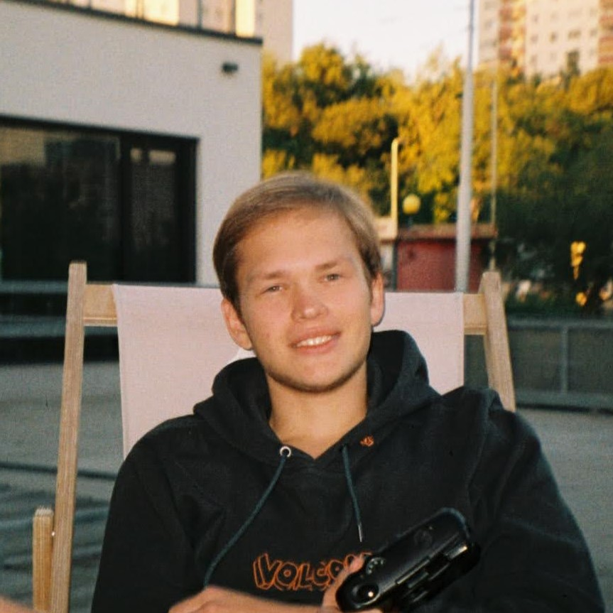

Intro
Contacts
LinkedIn: https://www.linkedin.com/in/aleksandr-khomutov-4a35b3162/
GitHub: @thelasts
Telegram: @khomambe
ResearchGate: https://www.researchgate.net/profile/Aleksandr-Khomutov
About me
I am 23 years old full-time student at Faculty of regional development of Mendel University in Brno. I am looking forward to gaining the necessary experience to move on, aiming to build a stable career at the intersection of IT, Digital and Social Development fields.Skills
- PowerBI Dashboards and Data Administration
- Postgres 17
- Python Core
- Linux, Bash/POSIX
- Markdown, HTML, CSS
- JavaScript for FE
- Docker
- Heroku + AWS
- MS Office: Excel, Word, PowerPoint, OneNote
- 3D design: Blender, Maya, Adobe Illustrator
- Spatial Data: QGIS, R
Code examples
print("Hello, world!")
Projects
Description of code projects is available at my LinkedIn profile in section Projects.Education
Masaryk University Faculty of Informatics [2020-2022]: Bachelor | not finished | Software Development | Brno, Czechia
Mendel University Faculty of Regional Development [2022-2025]: Bachelor | 3rd year | Regional Development | Brno, Czechia
Languages
Russian: C2, Native
English: C1, Fluent [state graduation exam: 88/100, English summer schools 2014-2015 in Dublin, Republic of Ireland]
Czech: C1, Fluent [study program in Czech, language courses exam: B2]